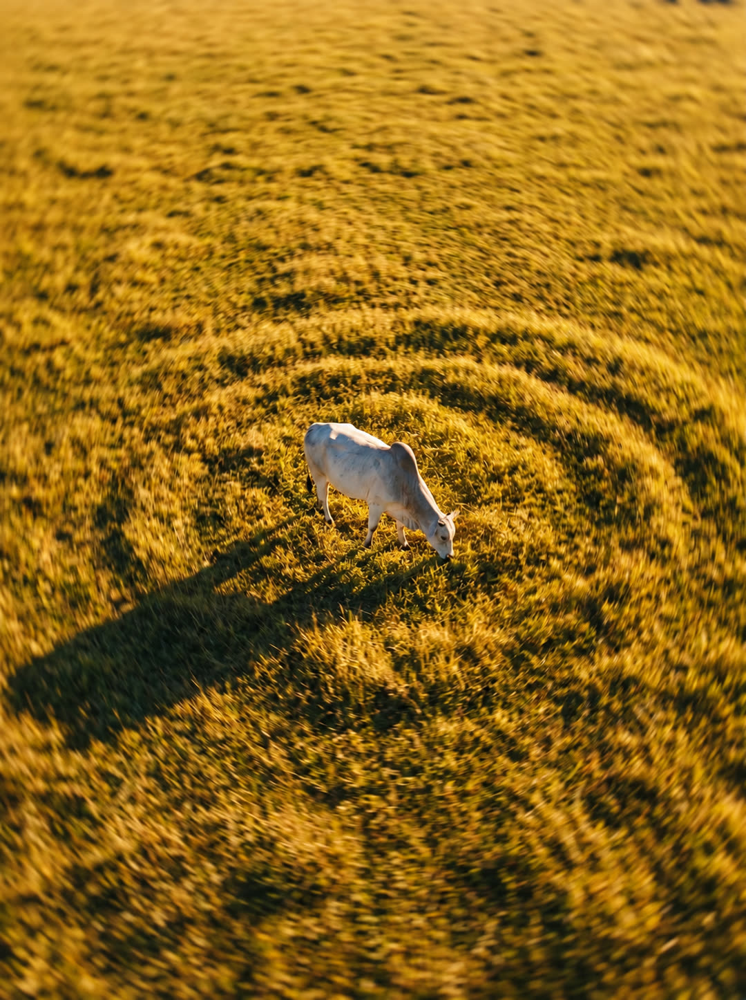
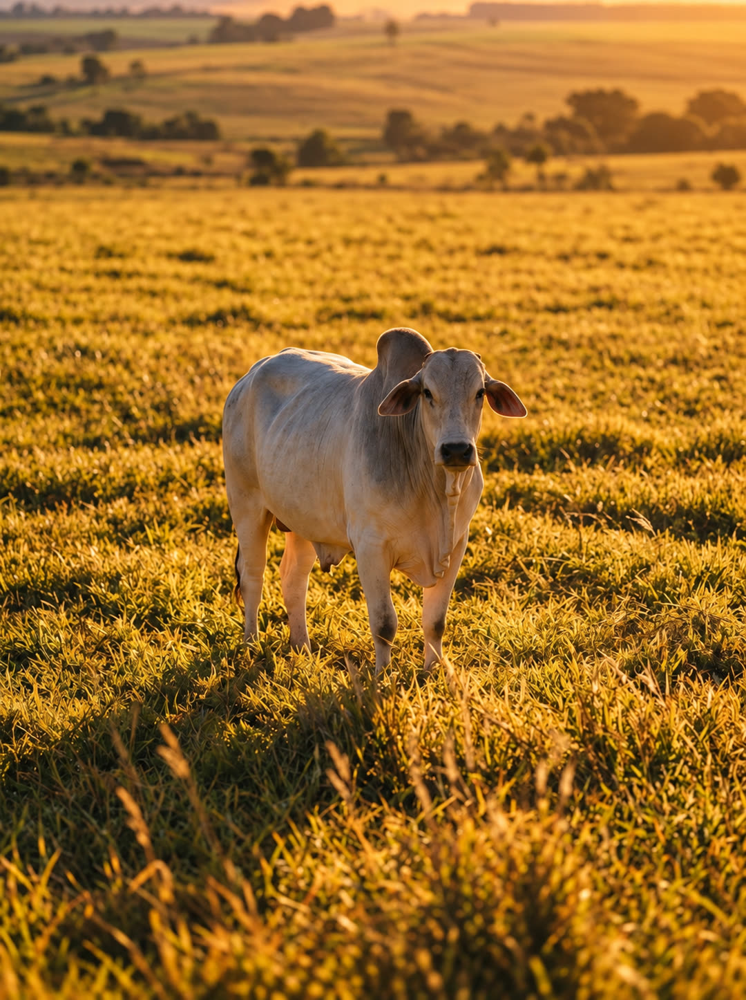
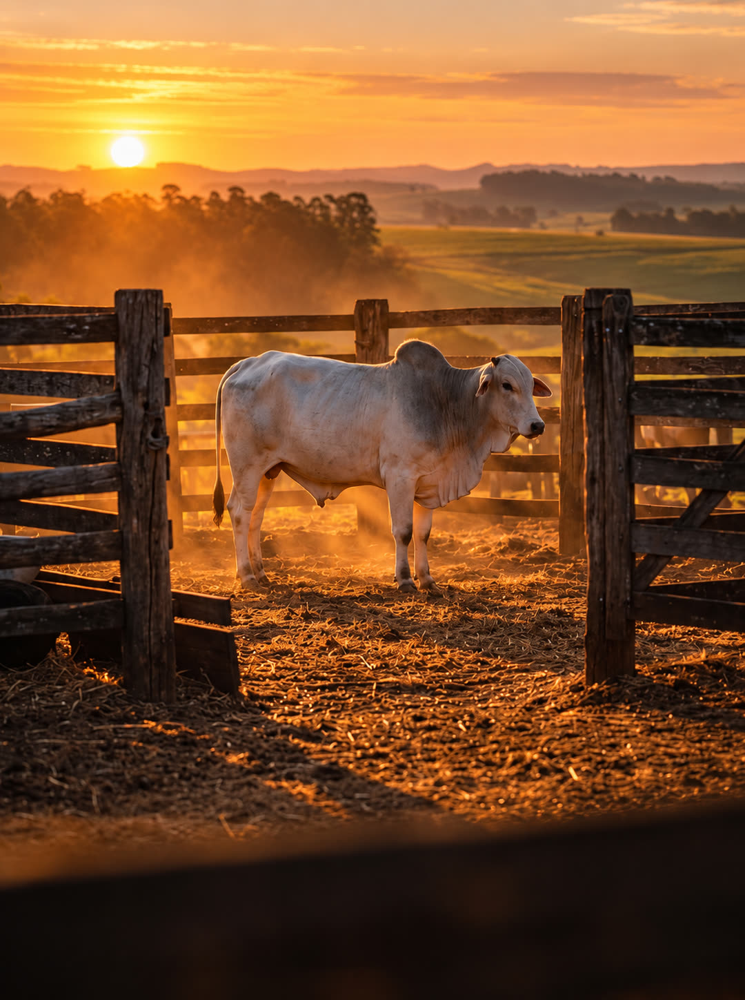
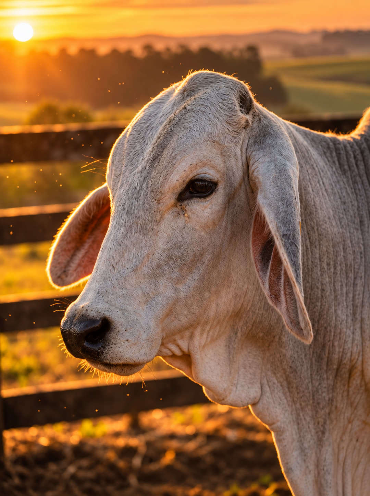

Programa de melhoramento Nelore
Genética que nasce no pasto.
Consanguinidade planejada para quem cria Nelore de verdade.
Role para entrar na fazenda




Programa de melhoramento Nelore
Consanguinidade planejada para quem cria Nelore de verdade.
A matriz
Rusticidade, fertilidade e carcaça nascem de uma boa escolha, feita a pasto e com histórico conhecido.
Consanguinidade planejada
Cada acasalamento é simulado antes de acontecer, e o coeficiente de endogamia (F) fica dentro da meta.
A fazenda
Pesagem, prenhez e desmama viram dados. Os dados voltam ao pasto como decisão de acasalamento.
Diagnóstico
Informe o perfil da fazenda e veja qual estratégia de consanguinidade planejada se encaixa nela.
Uma proposta, três ativos
A Legado Genética oferece informação para decidir: quem avaliar, quais famílias preservar, como planejar acasalamentos e como monitorar resultados, sem prometer ganho automático.
Caracterizar geneticamente o fenótipo, mapear famílias e desempenho, e transformar a preferência da proprietária em um programa de seleção estruturado.
Reservatório de diversidade e de linhagens complementares. Não desperdiçamos o patrimônio genético que a proprietária já possui.
Organizar os dados de nutrição e avaliar eficiência alimentar com método válido. Seu investimento em nutrição também poderá orientar a seleção.
O debate técnico
O cruzamento rende mais quilos no desmame no curto prazo, e este site mostra isso. A pergunta certa é qual caminho serve ao objetivo desta fazenda: preservar e valorizar a linhagem Fumaça com risco controlado.